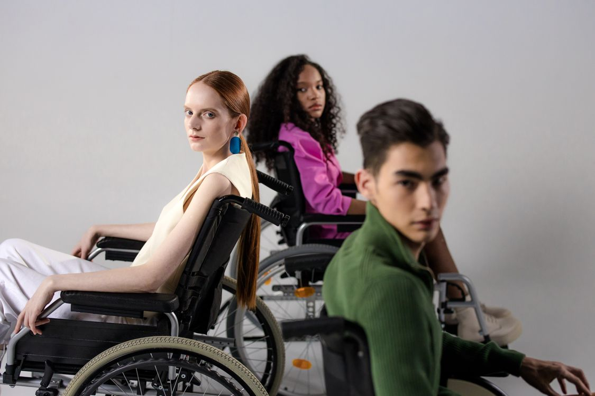

Rides with purpose
One service.
Many destinations.
Planned transportation for school, college, work, appointments, errands, and community life.
4rider groups,
one dependable approach
one dependable approach
01 • Children & school
Support for busy family schedules.
Scheduled rides for school-age children help families manage daily routines and keep young riders connected to the places that matter.
- Before and after school transportation
- Summer programs and camps
- Activities and scheduled destinations
- Appointments arranged with a parent or guardian
 Campus connections that fit real life.
Campus connections that fit real life.02 • College students
Reliable connections beyond campus.
College life moves fast. Planned transportation can help students reach class, work, appointments, shopping, and other scheduled destinations.
- Campus and class schedules
- Work and employment
- Shopping and errands
- Appointments and activities
03 • Seniors & disability
Thoughtful transportation, centered on the rider.
Respectful scheduled rides help seniors and individuals with disabilities stay connected to appointments, work, programs, errands, and their communities.
- Medical and therapy appointments
- Day programs and employment
- Shopping, errands, and community activities
- Mobility or accessibility needs discussed in advance

Care, dignity, and clear communication.Popular destinations
Where can ON TYME take you?
SchoolCollegeWorkMedical appointmentsTherapyDay programsShoppingErrandsCommunity activitiesSummer programs
Need a destination not listed? Call 346-422-5121 to ask about availability.
Ready to plan a ride?